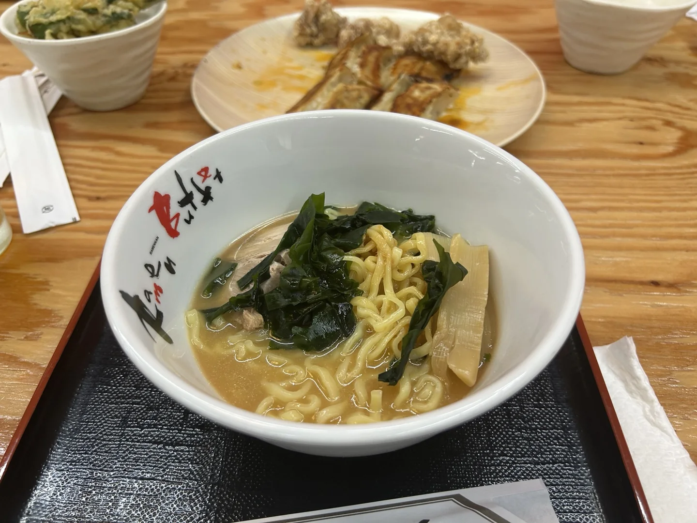
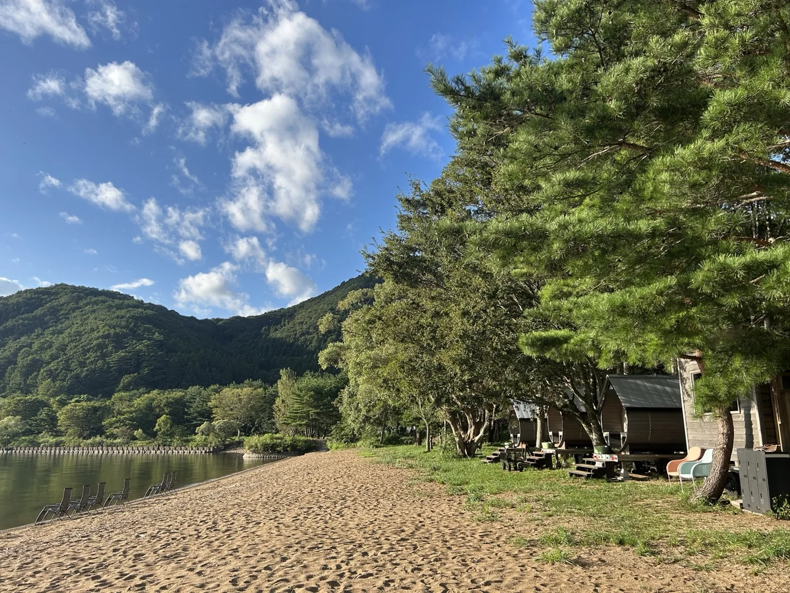
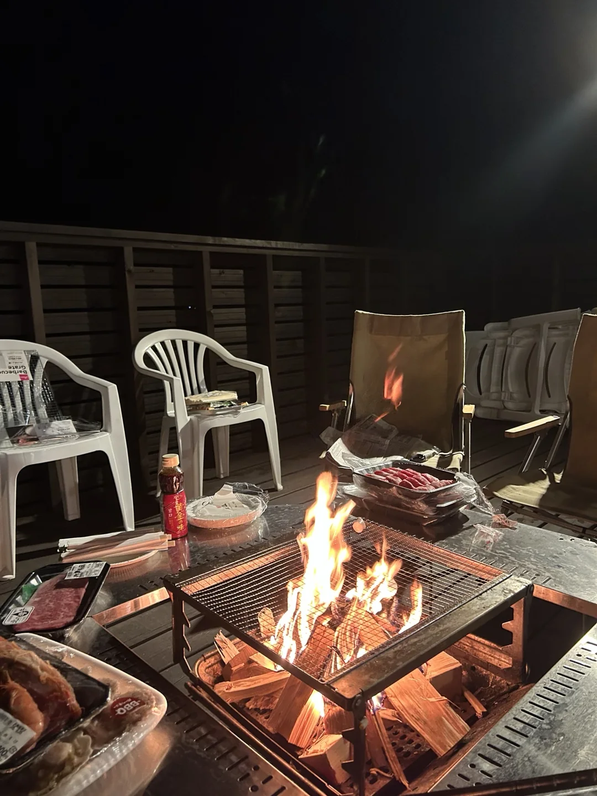
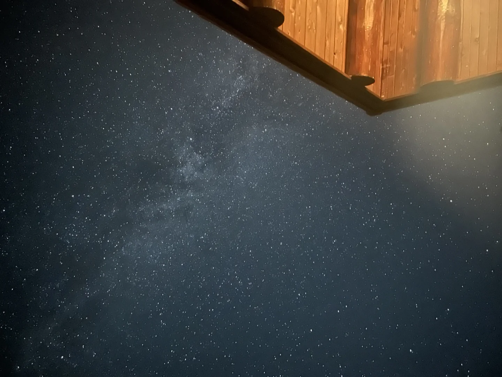
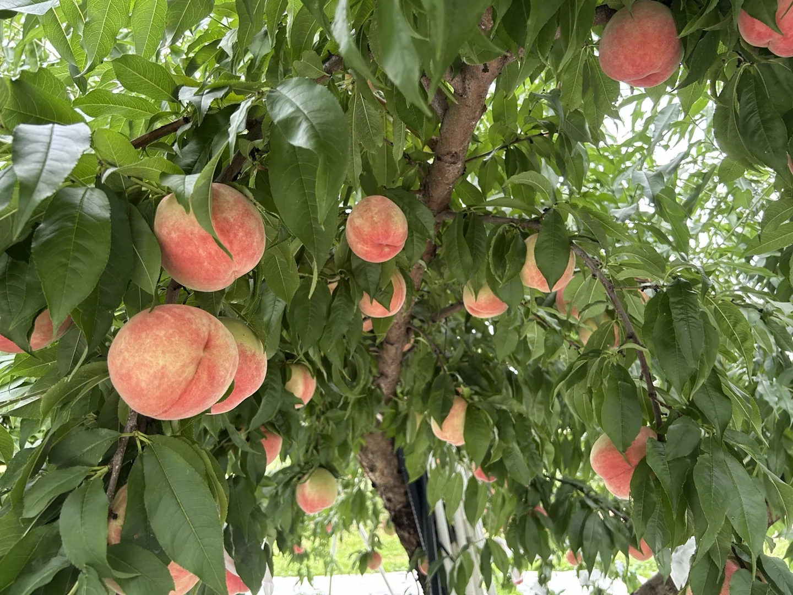

FUKUSHIMA / A LATE SUMMER ESCAPE
湖と、桃と、
星降る夜。
猪苗代の湖畔から、福島の果樹園へ。
自然のそばで過ごした、1泊2日の旅。
ラーメンを食べて、牧場に寄り道。
午後はサウナから湖へ入り、夜は焚き火を囲む。
見上げた星空と、翌朝の甘い桃。
福島の自然とおいしさを、ゆっくり楽しんだ。
この旅でまわった場所
THE ROUTE / 2 DAYSDAY 1 · 猪苗代
- 河京ラーメン館 猪苗代店12:00過ぎ · ラーメンビュッフェ
- 磐梯高原 南ヶ丘牧場乗馬とソフトクリーム
- Roots猪苗代 Lake Area15:00 · 湖畔サウナ → カフェで休憩
- ヨークベニマルで買い出し夜のBBQ用の食材を調達
- Roots オリジンログハウス焚き火BBQと星空
エリアのつながり1日目は猪苗代周辺をめぐり、2日目は北東の福島市へ。
ログハウスは湖畔サウナとは別の場所にある宿。
01DAY ONE / INAWASHIRO
A LITTLE DETOUR / RANCH
サウナの前に、
牧場のソフトクリーム。
ソフトクリーム
¥500乗馬・1コース
¥1,000
¥500乗馬・1コース
¥1,000
15:00 / LAKESIDE SAUNA
水風呂のかわりに、湖へ。
Roots猪苗代 Lake Area
予定どおり15時からサウナへ。受付の方がとても親切で、気持ちよく過ごせた。目の前の湖でクールダウンする「湖風呂」が、ここの特別なところ。
サウナのあとは、Roots内のカフェでひと休み。近くのヨークベニマルで夜のBBQの食材を買い、宿へ向かった。
02STAY / FIRE & STARS

ROOTS / ORIGIN LOG HOUSE
木の家で過ごす、
おいしい夜。
泊まったのは、Rootsのオリジンログハウス。木の雰囲気が心地よく、かなり快適に過ごせた。
夜は焚き火BBQ。肉をたくさん食べて、幸せな時間だった。着火剤と薪は備え付けがあり、火をつける準備もできた。
公式案内では、湖畔のLake Areaから車で約15分の別施設。
泊まって分かった、備品とアメニティー
- タオル・大
- タオル・小
- 歯ブラシ
- 布団
- スリッパ
- 着火剤
- 薪
基本的なものは揃っていた。花火は、打ち上げ以外ならできるとの案内もあった。いずれも今回の滞在時の情報なので、必要な備品や花火のルールは予約時に確認しておくと安心。

LOOK UP, SLOW DOWN.
夜空まで、思い出になる。
見上げると、素敵な星空。
こういう夜に、田舎のよさを感じる。
03DAY TWO / FUKUSHIMA

11:00 / PEACH PICKING
夏の終わりの、甘い桃。
まるせい果樹園
翌日は11時から桃狩り。この日が今シーズンの最終日とのことで、ぎりぎり間に合った。
木になっている桃は、正直、少し硬め。別に用意してもらった桃は柔らかくて、甘くて、とてもおいしかった。自分は柔らかい桃の方が好みだった。
LAST STOP / LUNCH & SOUVENIRS
最後は、道の駅ふくしま。
桃狩りのあとは、道の駅ふくしまでお昼ごはんとお土産を。ここを最後の立ち寄り先にして、そのまま東京へ帰った。
← ほかの旅の記録へ
more places, more memories.